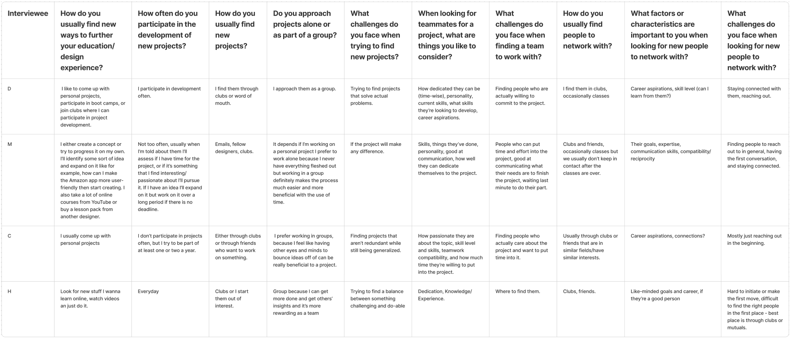
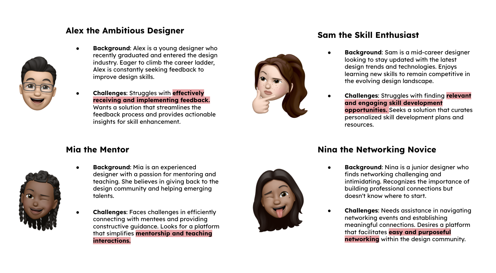
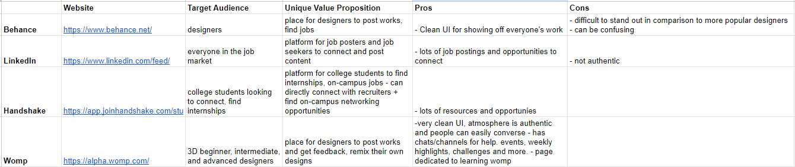
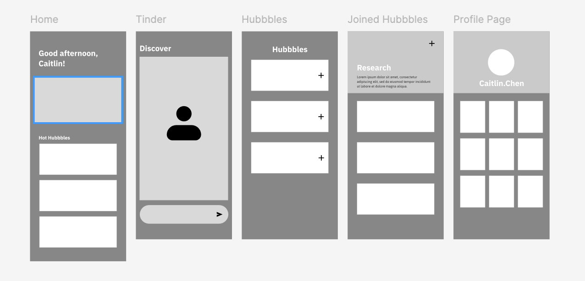
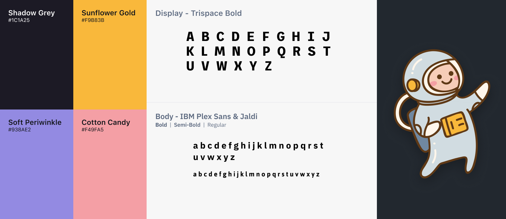
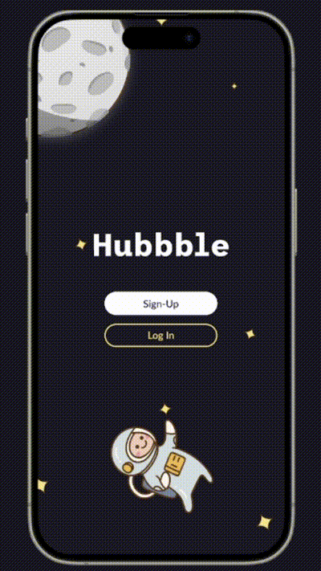

Hubbble, in eight hours
Hubbble was designed during an 8 hour designathon held by Design Interactive at UC Davis. Serving as a networking platform for designers who find networking exhausting.

With the dynamic nature of the industry, designers find themselves navigating a constant stream of new trends and technologies, often struggling to stay ahead with career expectations. Design a mobile or desktop application that seamlessly integrates with individuals’ daily lives to promote education and career development.
Four interviews, three findings
With one working day we prioritized research and rapid prototyping. We found that designers are looking for a more meaningful way to connect and grow their careers.
Connections matter for growth — but only when they feel genuine rather than transactional.
People grow through projects, and stay motivated when the work overlaps their own interests.
The valuable spaces are ones where critique and mentorship happen without being formally requested.



Take the awkwardness out of the first message
We focused on designing a platform that makes connection and growth feel natural. Hubbble brings together weekly design challenges, community spaces called Hubbbles, and a swipe-based matching feature to support feedback, collaboration, and meaningful connections.
- Weekly challenge on the home page. A shared prompt gives strangers something to talk about.
- Swipe to connect. Mutual opt-in swipe feature means nobody is cold-messaging, the awkward first move is already mutual.
- Profile as a mini portfolio. Your work does the introducing, so you don't have to describe yourself.
- "Hubbbles" topic communities. Where all the communities and groups are located. Portfolio review, resume feedback, project teams. Asking for help inside a group built for it costs nothing socially.

The design system
The space theme came from the Hubble telescope, a name that stands for looking outward and finding things nobody had seen yet, which is roughly what we wanted the app to feel like.

The Final Design

Adaptability & Priority Setting
The ability to pivot and adjust designs based on user feedback and changing requirements is crucial for creating successful products.
Next Steps
Continuing to iterate on the design system and exploring new ways to integrate user feedback into the development process.
last updated august 2026